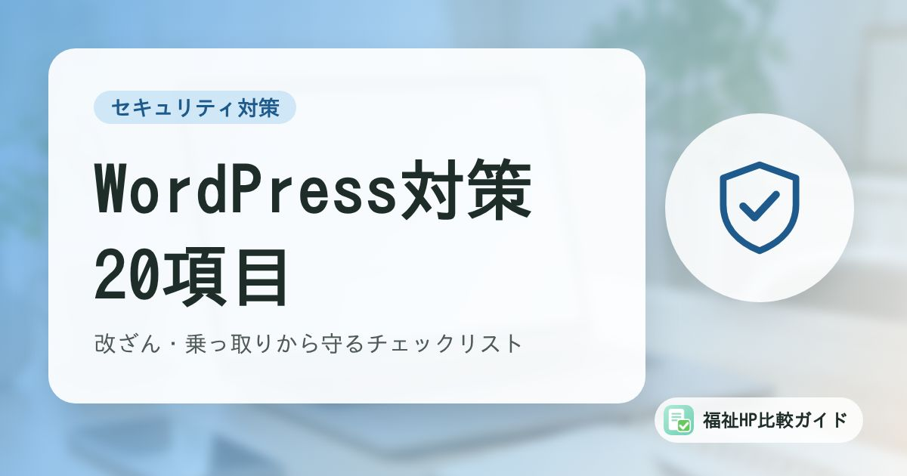

WordPressセキュリティ対策チェックリスト｜福祉事業所のホームページを改ざん・乗っ取りから守る20項目

WordPressは無料で使え、更新もしやすいことから福祉事業所のホームページでも広く使われています。一方で利用者が多いぶん、攻撃者に狙われやすいソフトでもあります。この記事では、確認すべき対策を20項目のチェックリストにまとめました。
この記事でわかること
- WordPressが狙われやすい理由と、2026年の緊急脆弱性の教訓
- 更新・ログイン・プラグイン・バックアップ・サーバー・運用の6分野20項目
- 制作会社に任せている場合に確認すべきこと
WordPressが狙われやすい理由
WordPressは世界中のウェブサイトで使われている、もっとも普及したホームページ作成ソフトです。利用者が多いということは、攻撃者にとっては「ひとつの弱点を見つければ、大量のサイトを攻撃できる」ということでもあります。
2026年7月には、WordPress本体に、ログインしなくても外部から任意のプログラムを実行されるおそれがある緊急の脆弱性（通称「wp2shell」）が見つかり、実際の攻撃にも悪用されました。修正版が公開され、WordPressの運営側が強制的な自動更新を行う異例の対応となりました。このケースは、更新を止めているサイトほど危険にさらされることを改めて示しています。
加えて、WordPressは「プラグイン」と呼ばれる拡張機能を組み合わせて使うのが一般的です。プラグインは世界中の開発者が作っており、品質や更新頻度はさまざまです。脆弱性の多くは、本体よりもプラグインやテーマで見つかっています。
チェックリスト20項目
自分たちのホームページについて、ひとつずつ確認してみましょう。わからない項目は、制作会社や保守会社に問い合わせてください。
A. 更新（4項目）
| No. | チェック項目 | 確認のポイント |
|---|---|---|
| 1 | WordPress本体が最新版になっている | 管理画面の「ダッシュボード」→「更新」で確認 |
| 2 | プラグインがすべて最新版になっている | 更新が長期間止まっているプラグインは代替を検討 |
| 3 | テーマが最新版になっている | 子テーマを使っている場合は親テーマも確認 |
| 4 | サーバーのPHPが、サポート中のバージョンになっている | サーバー会社の管理画面で確認できることが多い |
B. ログイン対策（5項目）
| No. | チェック項目 | 確認のポイント |
|---|---|---|
| 5 | 管理者のユーザー名が「admin」など推測しやすいものではない | 推測しやすい場合は新しい管理者を作成して切り替える |
| 6 | パスワードは長く（12文字以上目安）、他のサービスと使い回していない | パスワード管理ツールの利用も有効 |
| 7 | 二段階認証（2要素認証）を設定している | プラグインやサーバーの機能で設定できる |
| 8 | ログイン試行回数の制限を設定している | 総当たり攻撃への対策 |
| 9 | 退職者や使っていないアカウントを削除している | 職員ごとにアカウントを分け、権限は必要最小限に |
C. プラグイン・テーマの管理（3項目）
| No. | チェック項目 | 確認のポイント |
|---|---|---|
| 10 | 使っていないプラグイン・テーマを削除している | 「無効化」ではなく「削除」する |
| 11 | 入手元が公式ディレクトリや信頼できる販売元である | 無料配布の改造版（いわゆる海賊版）は使わない |
| 12 | 長期間更新されていないプラグインを使っていない | 最終更新日が古いものは代替を検討 |
D. バックアップ（3項目）
| No. | チェック項目 | 確認のポイント |
|---|---|---|
| 13 | ファイルとデータベースの両方を定期的にバックアップしている | 更新頻度に応じて毎日〜毎週 |
| 14 | バックアップをサーバーとは別の場所にも保存している | サーバーごと被害を受けても復元できるように |
| 15 | 実際に復元できることを確認している | 「取っているつもり」が一番危険 |
E. サーバー・通信（3項目）
| No. | チェック項目 | 確認のポイント |
|---|---|---|
| 16 | 常時SSL（https）化している | アドレスバーに鍵マークが表示されるか |
| 17 | サーバー会社のWAF（ウェブアプリケーションファイアウォール）を有効にしている | 多くのレンタルサーバーで無料で使える |
| 18 | サーバーやFTPのパスワードも強固で、使い回していない | 制作会社と共有したままになっていないか確認 |
F. 運用体制（2項目）
| No. | チェック項目 | 確認のポイント |
|---|---|---|
| 19 | ホームページ・ドメイン・サーバーの管理者と連絡先が記録されている | 担当者が異動・退職しても引き継げるように |
| 20 | 改ざんなどが起きたときの連絡先と手順を決めている | 制作会社、サーバー会社、自治体、警察など |
まずは5項目から
すべてを一度に対応するのが難しい場合は、No.1・2（本体とプラグインの更新）、No.6・7（パスワードと二段階認証）、No.13（バックアップ） の5項目から始めてください。これだけでも、被害にあう可能性を大きく下げられます。
自動更新の設定を確認しよう
WordPressには自動更新の機能があります。管理画面の「ダッシュボード」→「更新」で、本体の自動更新の設定を確認できます。プラグインやテーマも、一覧画面で個別に「自動更新を有効化」できます。
更新によって表示が崩れることを心配して自動更新を止めているケースもありますが、2026年7月の緊急脆弱性のように、公開から攻撃開始までの時間はどんどん短くなっています。少なくともセキュリティ修正を含む本体のマイナーアップデートは、自動で適用される状態にしておくのが安全です。
制作会社に任せている場合の確認事項
制作会社や保守会社にホームページの管理を任せている場合は、次の点を確認しておきましょう。
- 保守契約に「本体・プラグインの更新」「バックアップ」「改ざん監視」「復旧対応」が含まれているか
- 更新の頻度（毎月、四半期ごとなど）と、更新内容の報告があるか
- 改ざんが起きた場合の対応時間と費用
- 管理画面・サーバー・ドメインのログイン情報を事業所側でも把握できているか
- 契約終了時に、サイトのデータやアカウントを引き渡してもらえるか
「作りっぱなし」の契約に注意
制作費が安くても、公開後の保守が含まれていない契約では、誰も更新しないまま数年が経ってしまうことがあります。制作会社を比較するときは「公開後に誰が何をするのか」を必ず確認しましょう。選び方のポイントは「失敗しない制作会社の選び方と質問リスト」で解説しています。
まとめ
WordPressは便利な反面、更新や管理を怠ると改ざん・乗っ取りの被害にあいやすくなります。本体・プラグインの更新、強いパスワードと二段階認証、不要なプラグインの削除、バックアップという基本対策を確実に行い、チェックリストで定期的に点検しましょう。
制作会社に任せている場合も、「誰が・何を・どのくらいの頻度で」行っているかを把握しておくことが、事業所のホームページを守る第一歩です。
よくある質問
自動更新を有効にするとサイトが壊れることはありませんか？
プラグインやテーマの組み合わせによっては、更新後に表示が崩れることがあります。ただし、更新しないまま放置するリスクの方がはるかに大きいため、少なくともWordPress本体のセキュリティ更新（マイナーアップデート）は自動更新にしておくことをおすすめします。更新前にバックアップを取る仕組みがあれば、万一の際も元に戻せます。
セキュリティプラグインを入れれば安心ですか？
ログイン試行の制限や改ざんの検知などに役立ちますが、それだけで安全になるわけではありません。本体・プラグインの更新、強いパスワード、不要なプラグインの削除、バックアップといった基本対策と組み合わせることが前提です。
WordPress以外のホームページ作成サービスなら安全ですか？
Wix、Jimdo、ペライチなどのクラウド型サービスは、ソフトウェアの更新をサービス提供会社が行うため、利用者側の更新作業は不要です。ただし、アカウントの乗っ取り対策（強いパスワード、二段階認証）は利用者側の責任です。詳しくは「ホームページ作成ツールと制作会社の比較」の記事も参考にしてください。
参考資料・出典
- WordPress.org「Hardening WordPress（WordPressの堅牢化）」
- GMO Flatt Security Blog「WordPressの深刻度『緊急』脆弱性 wp2shell の概要と対応指針」
- INTERNET Watch「WordPressに管理者権限なしで遠隔でのコード実行が可能になる深刻な脆弱性」
- IPA「安全なウェブサイトの作り方」
- IPA「中小企業の情報セキュリティ対策ガイドライン」
制度・料金・統計は改定される場合があります。最新の内容は各出典の公式情報でご確認ください。